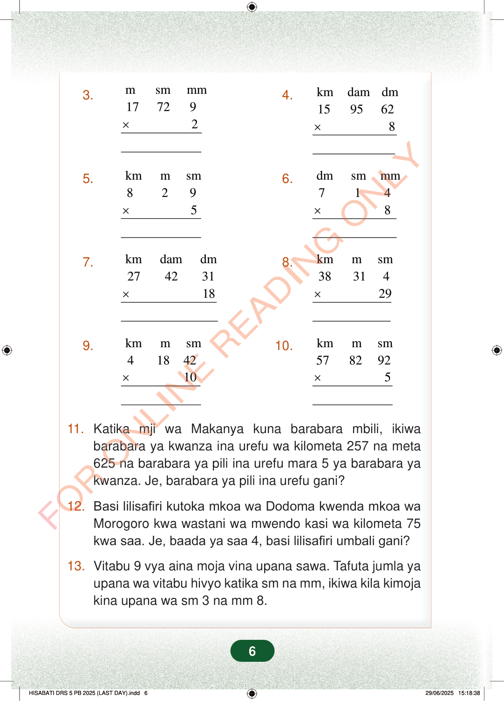

3.msmmm177292×4.kmdamdm1595628×5.kmmsm8295×6.dmsmmm7148×7.kmdamdm27423118×8.kmmsm3831429×10.kmmsm5782925×9.kmmsm4184210×11.Katika mji wa Makanya kuna barabara mbili, ikiwabarabara ya kwanza ina urefu wa kilometa 257 na meta625 na barabara ya pili ina urefu mara 5 ya barabara yakwanza. Je, barabara ya pili ina urefu gani?12.Basi lilisafiri kutoka mkoa wa Dodoma kwenda mkoa waMorogoro kwa wastani wa mwendo kasi wa kilometa 75kwa saa. Je, baada ya saa 4, basi lilisafiri umbali gani?13.Vitabu 9 vya aina moja vina upana sawa. Tafuta jumla yaupana wa vitabu hivyo katika sm na mm, ikiwa kila kimojakina upana wa sm 3 na mm 8.6
3. m sm mm 17 72 9 2 ×
4. km dam dm 15 95 62 8 ×
5. km m sm 8 2 9 5 ×
6. dm sm mm 7 1 4 8 ×
7. km dam dm 27 42 31 18 ×
8. km m sm 38 31 4 29 ×
10. km m sm 57 82 92 5 ×
9. km m sm 4 18 42 10 ×
11. Katika mji wa Makanya kuna barabara mbili, ikiwa barabara ya kwanza ina urefu wa kilometa 257 na meta 625 na barabara ya pili ina urefu mara 5 ya barabara ya kwanza. Je, barabara ya pili ina urefu gani?
12. Basi lilisafiri kutoka mkoa wa Dodoma kwenda mkoa wa Morogoro kwa wastani wa mwendo kasi wa kilometa 75 kwa saa. Je, baada ya saa 4, basi lilisafiri umbali gani?
13. Vitabu 9 vya aina moja vina upana sawa. Tafuta jumla ya upana wa vitabu hivyo katika sm na mm, ikiwa kila kimoja kina upana wa sm 3 na mm 8.
6
Zoezi la kwanza1.km m sm1 510 21× 92.km m sm10 133 44× 143.m sm mm 17 72 9 × 24.km dam dm 15 95 62 × 85.km m sm 8 2 9 × 56.dm sm mm 7 1 4 × 87.km dam dm 27 42 31 × 188.km m sm 38 31 4 × 299.km m sm 4 18 42 × 1010.km m sm 57 82 92 × 511.Katika mji wa Makanya kuna barabara mbili, ikiwa barabara ya kwanza ina urefu wa kilometa 257 na meta 625 na barabara ya pili ina urefu mara 5 ya barabara ya kwanza.Je, barabara ya pili ina urefu gani?12.Basi lilisafiri kutoka mkoa wa Dodoma kwenda mkoa wa Morogoro kwa wastani wa mwendo kasi wa kilometa 75 kwa saa.Je, baada ya saa 4, basi lilisafiri umbali gani?13.Vitabu 9 vya aina moja vina upana sawa.Tafuta jumla ya upana wa vitabu hivyo katika sm na mm, ikiwa kila kimoja kina upana wa sm 3 na mm 8.FOR ONLINE READING ONLY